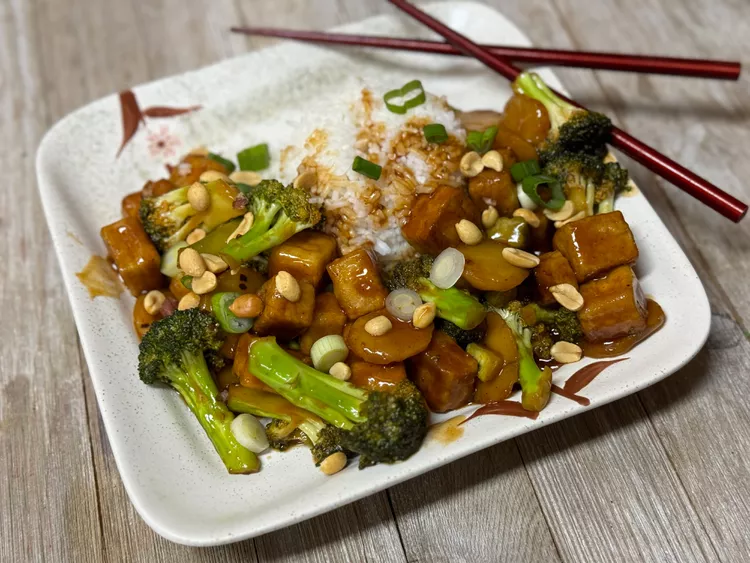

Tofu Broccoli Stir-Fry
Home

Recipe by Nicole Russell
Description
Tofu Broccoli Stir-Fry is a delicious and healthy vegetarian dish made with tofu, broccoli, and a savory stir-fry sauce.
Ingredients
- 2 tablespoons vegetable oil
- 12 ounces extra-firm tofu, pressed and cut into cubes
- 2 tablespoons of cornstarch
- 1 tablespoon toasted sesame oil
- 12 ounces broccoli, stems chopped and florets cut in half lengthwise
- 8 ounces sliced water chestnuts
- 1 cup kung pao sauce, such as Panda Express
- 1/3 cup water
- 1 green onion, sliced
- 1/4 cup roasted peanuts
Steps
- Heat vegetable oil in a large skillet over medium-high heat. Place tofu cubes in a bowl, sprinkle with cornstarch, and toss to combine.
- Cook tofu in the skillet for 4 minutes. Using tongs, flip cubes over and cook 4 minutes more. Drain tofu on paper towel-lined plate.
- Drain skillet; wipe clean with paper towels. Add sesame oil and broccoli. Cook for 6 minutes, stirring continually. Add water chestnuts, kung pao sauce, and water. Cook for 4 minutes more. Turn off heat.
- Stir in reserved tofu. Toss until evenly combined. Top with green onions and peanuts. Serve over rice or noodles.